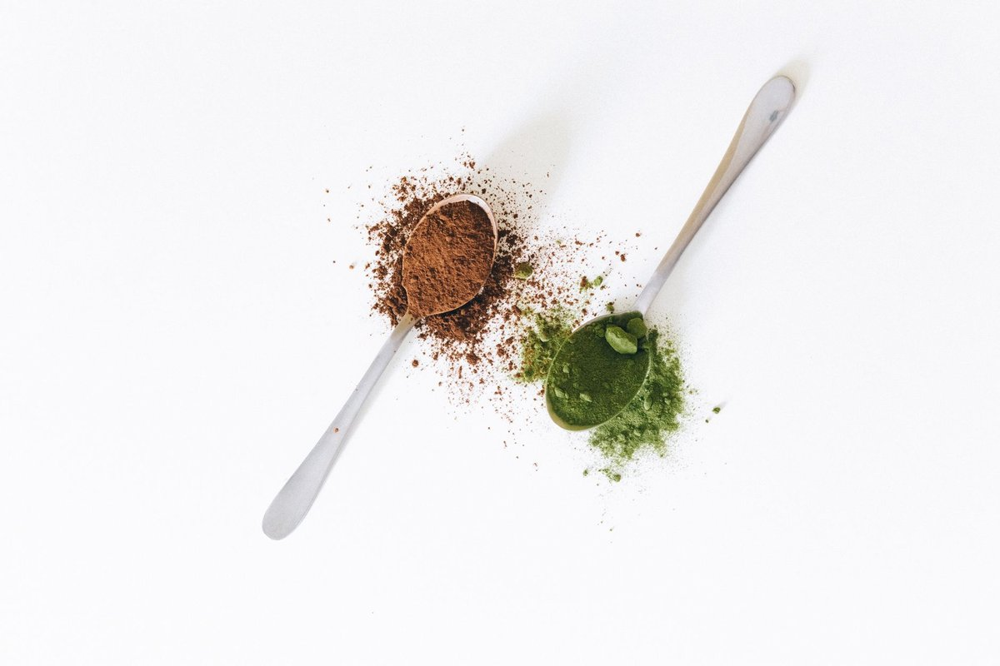

Vitamin C Linked To Fewer Deaths In Blood Disorder Trial: Key Steps
Key takeaways
- A few years ago, I stared at my lab work with my stomach in knots, completely exhausted from chasing miracle supplements that never moved the needle.
- That frustrating season taught me that when real clinical news breaks—like how Vitamin C linked to fewer death
- Track what feels sustainable and adjust gradually.
A few years ago, I stared at my lab work with my stomach in knots, completely exhausted from chasing miracle supplements that never moved the needle. That frustrating season taught me that when real clinical news breaks—like how Vitamin C linked to fewer deaths in blood disorder trial participants—we need to look at what the science actually means for our daily routines.
Researchers studying clonal hematopoiesis and myelodysplastic syndromes recently observed fascinating survival outcomes when patients received targeted ascorbic acid therapy. It was not about mega-dosing supermarket powders; it was about precision cellular support that altered epigenetic pathways.
For regular folks like us navigating real life, understanding how Vitamin C linked to fewer deaths in blood disorder trial registries gives us permission to stop guessing and start focusing on bioavailable, steady nourishment. You can pair these dietary shifts with a related healthy tip to build a truly resilient foundation.
When I rebuilt my own protocol, I stopped chugging synthetic drinks and started leaning on natural, whole-food ascorbate paired with bioflavonoids. Consistency beats intensity every single time when you want to protect your vascular and hematopoietic systems.
Adding raw bell peppers, kiwis, and gently steamed broccoli provided the micro-nutrients my system needed without triggering oxidative rebound. If you want to refine your daily routine further, check out another practical guide on nutrient timing.
Pro-Tip: Pair your vitamin-C-rich whole foods with plant iron sources like pumpkin seeds or lentils to boost absorption by up to 300 percent naturally.
Physical vitality is not just about what goes on your plate; moving your lymphatic fluid helps transport those micronutrients right where they belong. Whenever my fatigue flared up, I reached for my low-impact Resistance Bands Set to stimulate circulation without wrecking my joints.
Gentle tension exercises encourage blood flow and metabolic health without the cortisol spikes caused by punishing gym sessions. Following a similar wellness insight can help keep your immune baseline strong when energy is low.
The 2-Minute Win
Dice half a raw red bell pepper right now and eat it alongside a handful of raw walnuts for an instant, bioavailable antioxidant surge.
Healing and resilience are rarely about drastic overhauls that burn you out by week two. Learn to stay consistent with this steady rhythm instead of chasing perfectionism that leaves you depleted.
Take it one meal and one mindful movement session at a time, and don't hesitate to explore more health guides to keep your momentum going. Educational only — not medical advice.
Disclosure: This page may contain affiliate links.
Recommended Reading
- The Ultimate Guide to Daily Hydration: Boost Energy & Wellness
- Mindful Eating: Boost Gut Health & Digestion Naturally
- Daily Gratitude Practice: Boost Mood & Reduce Stress Naturally
More in health

healthCreatine May Help Build Muscle Even Without Exercise, Researchers Find
Creatine May Help Build Muscle Even Without Exercise, Researchers Find according to new data. Discover how this suppleme
Read article →Scientists Discover Strange Link Between Low Vitamin D And Pain
Scientists discover strange link between low vitamin D and pain. Learn how fixing my levels ended years of mystery aches
Read article →